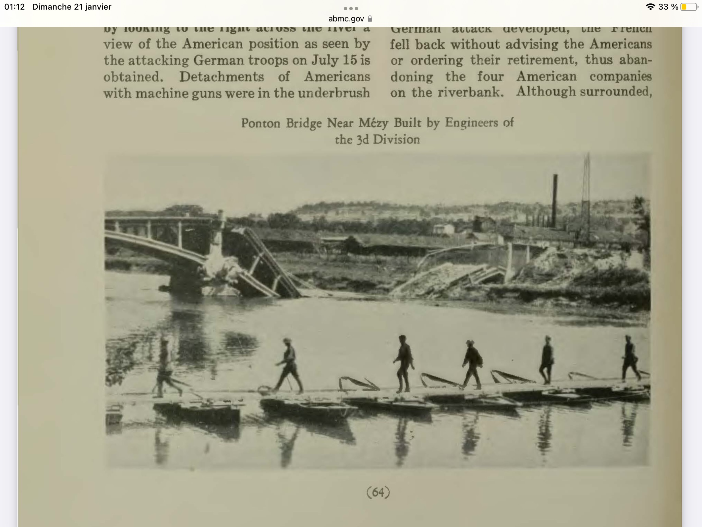

Les passerelles — une préparation de six semaines
Dès le début de juillet, alors que la situation était défensive, le général de Mondésir avait anticipé la contre-offensive. Privé de son équipage de pont réquisitionné pour le Gouvernement de Paris, il donna l'ordre au colonel Connétable, commandant du génie du corps d'armée, de réquisitionner en aval de Château-Thierry toutes les embarcations disponibles : bachots, barques, canots, yoles — « même des périssoires ». Le matériel de platelage — poutrelles, madriers, planches, cordages — fut accumulé en un point à 14 kilomètres à l'ouest de Château-Thierry, hors de vue des avions ennemis.
Deux passerelles de 70 mètres chacune furent montées, ajustées, puis démontées en éléments transportables par camions. La 39e Division d'Infanterie préparait de son côté une passerelle sur radeaux de tonneaux, et la 3e Division US des passerelles sur radeaux de bidons de pétrole vides. Tout était prêt avant que l'ordre de franchir ne soit donné.
Dans l'après-midi du 20 juillet, l'ordre de traverser la Marne arriva. Dès le 21 au point du jour, les troupes commencèrent à franchir le fleuve. Les passerelles fonctionnèrent dans l'ordre suivant : un premier système sur les ruines du pont du chemin de fer à l'est de Château-Thierry, à 8h15 ; la passerelle de Chierry à 10h30 ; celle de Château-Thierry à midi. Le génie de la 3e Division US lança ses deux passerelles, l'une entre Fossoy et Gland, l'autre devant Chartèves — côté Jaulgonne.
« Le soir du 21, [le génie] en établissait deux nouvelles à Fossoy et Mézy et commençait la construction d'un pont de bateaux avec les pontons d'équipage abandonnés par l'ennemi. » Général Piarron de Mondésir — Souvenirs et pages de guerre, 1919 · 38e Corps d'Armée
Le 6e Régiment du Génie US — sous les bombes à Mézy
Les Companies A et C du 6e Engineers construisent un pont de dix tonnes à Mézy entre le 23 et le 27 juillet, sous tirs d'artillerie de jour et bombardements aériens de nuit. Le 26 juillet, quinze avions allemands attaquent simultanément — les équipes de mitrailleuses des ingénieurs tiennent leurs postes jusqu'à l'arrivée de l'aviation alliée. La Company F, chargée de l'entretien du pont de Mézy, reçoit le 27 juillet l'ordre de démonter l'ouvrage et de le remonter à Jaulgonne, à trois kilomètres en amont. Les bateaux sont arrimés par paires, chargés du matériel et des paquetages — et toute la compagnie devient marin. Certains ramèrent, d'autres furent remorqués à la corde depuis la berge, et quelques équipes improvisèrent même des voiles. Partis à la nuit tombée, ils avaient réinstallé le pont avant le lever du jour.
La Company B répare les routes de Mont-St-Père à Jaulgonne à partir du 24 juillet. Un détachement de 35 hommes envoyé vers Le Charmel dépasse sans le savoir les lignes alliées, entre en No Man's Land, essuie des tirs de mitrailleuses allemandes — et au retour, se retrouve sous le feu de sa propre artillerie américaine.
Source : History of the Sixth U.S. Engineers, historique régimentaire, domaine public (Google Books)

